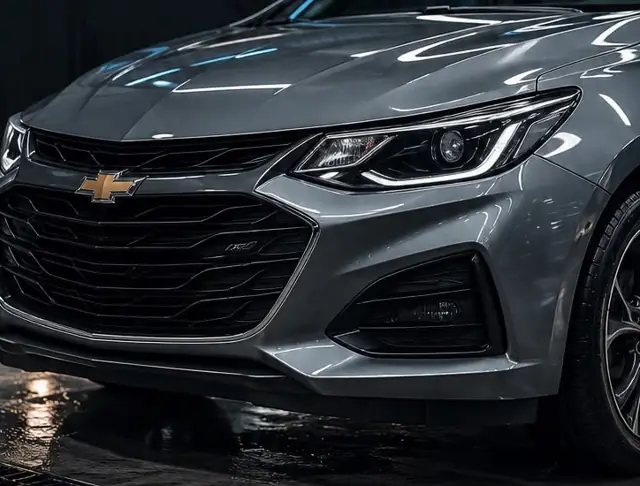
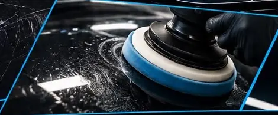
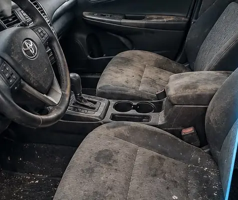
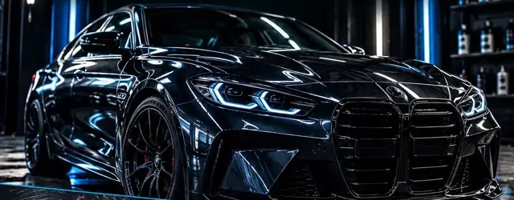
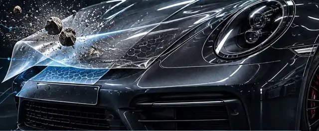
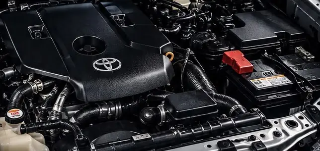
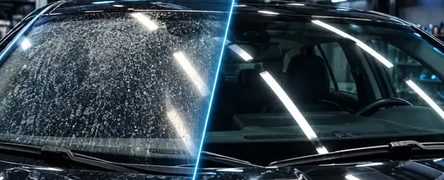

Lavado premium
Según tu auto
- Limpieza profunda del exterior
- Descontaminación de la pintura
- Brillo intenso y repelencia al agua
El arte del detalle · Gualeguay
Lavado premium, pulido y corrección de pintura, tratamientos acrílicos y cerámicos, PPF, interior, motor, vidrios y ópticas.
5,0 en Google 25 de Mayo 1546
AUTOSSUVCAMIONETAS
Recupera el brillo
Repele agua y suciedad
Protege la pintura
Terminación prolija
Tratamientos
Del lavado de todos los meses a la protección que dura años. Cada auto es distinto, por eso te pasamos el presupuesto según tu auto: tocá «Pedir presupuesto» y te llega el WhatsApp con el servicio ya escrito.
Según tu auto

Según tu auto

Según tu auto

Según tu auto2 a 3 años de protección*
*La duración depende del uso, el mantenimiento y las condiciones del vehículo. Mandanos el modelo o unas fotos por WhatsApp y te pasamos el presupuesto.
Antes y después
Interiores con años de uso y ópticas amarillentas que vuelven a verse como nuevas.

 Antes
Después
Antes
Después
Arrastrá la línea con el dedo o usá las flechas del teclado.
Más servicios
Estos trabajos dependen del estado del auto: mandanos una foto por WhatsApp y te pasamos el presupuesto.

Corrige marcas y swirls, recupera el brillo y termina con sellado.
Consultar
Barrera física contra piedras, roces, rayones e insectos. Transparente y de larga duración.
Consultar
Tapizados, alfombras, plásticos y paneles. Saca suciedad y manchas.
Consultar
Desengrase controlado y limpieza de plásticos y zonas de difícil acceso.
Consultar
Saca marcas de agua y depósitos minerales. Mejora la visibilidad.
Consultar
Ópticas opacas o amarillentas recuperan claridad y terminación.
ConsultarCómo reservar
Por WhatsApp, con el servicio que querés y el modelo de tu auto. Si es pulido, vidrios u ópticas, sumá una foto.
Te confirmamos día, horario y cuánto tiempo necesita el trabajo.
En 25 de Mayo 1546, Gualeguay. Te avisamos cuando está listo.
Preguntas frecuentes
Entre 2 y 3 años de protección. Depende del uso, de cómo se lo mantenga y de las condiciones en las que está el auto.
Los dos protegen y dan brillo. El acrílico combina pulido de corrección con sellador acrílico; el cerámico es la protección más completa y la que más dura, con mayor repelencia al agua y la suciedad.
Sí: autos, SUV y camionetas. Escribinos con el modelo y te pasamos el presupuesto.
Depende del estado y de la profundidad de las marcas. Mandanos una foto por WhatsApp y te hacemos la evaluación.
En 25 de Mayo 1546, Gualeguay, Entre Ríos.
Dónde estamos
5,0 en Google
Cómo llegarReservá tu turno
Escribinos y te respondemos con el día y el horario.
3444 510332 Escribinos por WhatsApp